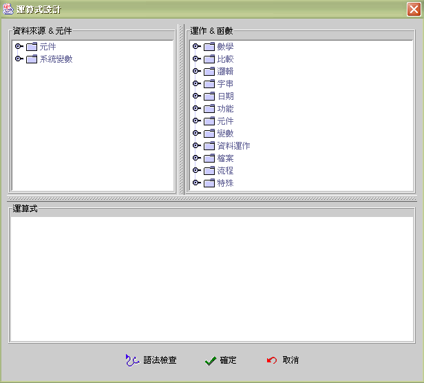

|

|
 |
Chapter 12
Formula |
 |
12. 運算公式
(formula)
運算公式類別 (formula type)
運算子及函式 (operator and function)
運算公式編輯視窗 (formula design window)
運算公式設計 (formula design)
運算公式資料型別 (formula data type)
運算資料的取值 (retrieval computed data)
變數
(variable)
運算子 (operator)
函式的參數
(parameters of function)
運算公式結果值 (formula result data)
IF-THEN-ELSE 流程控制 (IF-THEN-ELSE flow control)
運算公式是由 jLIVE Builder™ 系統的運算公式直譯器
(interpreter) 在執行期，即時 (real time) 解譯並執行 (execute)，在運算公式第一次被執行時，直譯器
(interpreter) 除了解析和執行 (parse syntax and execute)
外，會連結 (binding) 參數，下一次再執行同一運算公式時，執行的效率將倍增，所以 jLIVE Builder™ 系統的運算公式直譯器
(interpreter) 亦具有編譯能力 (compiler)，能在執行期 (runtime) 以高速的效率執行運算。
運算公式
(formula) 主要是在 jLIVE Builder™ 應用程式設計中，提供一可程式化的運算程序
(programmable computing
procedure)。運算程序 (computing procedure) 包括有：
-
資料值運算 (data compute)：數學、比較、邏輯、字串、日期、功能。
-
參數與變數存取 (parameter and variable
access)：System、Hash、Stack、LocalHash、SysHash、SpParam、ServletResp。
-
元件操作 (component operate)：屬性、內含值的讀取與設定。
-
資料來源操作 (data source operate)： 開啟、查詢資料來源，資料記錄的設值、移動、新增、編輯、存檔、刪除。
-
檔案操作 (file operate)：下載檔案資料、複製檔案、檔案及目錄維護。
-
啟動事件 (fire event)：啟動事件。
-
應用系統流程操作 (application system flow operate)：開啟訊息盒、視窗、印表作業，離開視窗、應用程式。
運算公式
(formula) 是由運算資料 (operand) 、運算子 (operator)、函式
(function) 組成程式語言中的算式 (expression)，加上流程控制的 IF-THEN-ELSE 所組成。其中運算資料
(computed data) 包括有：
-
使用者輸入或內含於元件的資料(user input or component data)
-
系統參數與變數 (system parameter and variable)
-
資料來源目前狀態與資料記錄欄位值 (current data source state and record field data)
-
下載的檔案資料 (down load file)
-
資料庫預儲程序回傳資料 (stored procedure return data)
-
Servlet Call 的回傳資料 (Servlet call return data)
-
Cookie
設計師可以運算資料 (computed data) 配合使用各種函式 (function)，執行一運算程序
(computing procedure)
或單純的資料值運算 (data compute)。每一個函式或運算都會有傳回值
(return value)，傳回值 (return value)
可以做為其他函式或運算的參數值，意即運算公式的函式參數
(function parameter) 或運算資料 (computed data) ，
可以是一個函式或運算傳回值。運算公式執行後會有一最終的傳回值
(return value) ，即是運算公式的結果值 (result value)，結果值
(result value) 通常運用於值的設定 (data setting) 或條件的判斷
(condition)
，運用於條件判斷時，系統會將結果值以下列規則分辨真
(true) 偽 (false)：
-
真
(True) ：結果值非 0 且 非空字串。
-
偽
(False)：結果值為 0 或 空字串。
例如：使用於事件啟動的條件運算公式、IF condition _formula THEN formula ELSE formula 中的
condition_formula 等等。
運算公式類別 (formula type)
運算子與函式
(operator and
function)
|
數學 |
比較 |
邏輯 |
字串 |
日期 |
功能 |
元件 |
|
x+y |
x=y |
x And y |
x $ y |
Today() |
Abs(x) |
GetData(compname) |
|
x-y |
x<y |
x Or y |
x[y] |
Date(yyyy,mm,dd) |
Round(x) |
SetData(compname,value) |
|
x*y |
x>y |
Not x |
x[y to z] |
CurrentTime() |
Round(x,#place) |
GetGridData(gridname,row,col) |
|
x/y |
x<=y |
|
LTrim(x) |
NextDate(fromdate,#y,#m,#d) |
Truncate(x) |
GetProp(compname,property) |
|
x%y |
x>=y |
|
RTrim(x) |
DaysRange(formdate,todate) |
Truncate(x,#place) |
SetProp(compname,property, value) |
|
x^y |
x<>y |
|
LRTrim(x) |
Year(x) |
Random(seed ) |
SetProp
(compname,property,value1, value2) |
| |
|
|
TrimAll(x) |
Month(x) |
Random( ) |
Grid2File(gridname, filename) |
| |
|
|
Find(x,y) |
Day(x) |
FormatNumber(pattern, value) |
Grid2File(gridname, filename,
bmasktext) |
| |
|
|
Find(x,y,pos) |
DayofWeek(x) |
|
Grid2File(gridname, filename,
bmasktext, bheader) |
| |
|
|
FindLast(x,y) |
DayofMonth(x) |
|
Grid2File(gridname, filename,
bmasktext, bheader, sep1) |
| |
|
|
FindLast(x, y, pos) |
DayofYear(x) |
|
Grid2File(gridname, filename,
bmasktext, bheader, sep1, sep2) |
| |
|
|
Length(x) |
IsValidDate(x) |
|
Focus(compname) |
| |
|
|
Length2(x) |
IsValidTime(x) |
|
Revalidate() |
| |
|
|
Replace(x,y,z) |
IsLeapYear(x) |
|
Revalidate(globe) |
| |
|
|
Upper(x) |
ElapsedTime
(fromtime,totime) |
|
|
| |
|
|
Lower(x) |
ElapsedDateTime
(fromdatetime,todatetime) |
|
|
| |
|
|
Char(ascii) |
FormatDateTime
(pattern,datetime) |
|
|
| |
|
|
ASCII(char) |
FormatDateTime
(pattern,datetime,
locale) |
|
|
| |
|
|
UTF2Str(utf) |
NextDateTime
(datetime,second) |
|
|
| |
|
|
Str2UTF(str) |
ApServerDateTime() |
|
|
| |
|
|
Token(str, sep, nth) |
ApServerDateTime(refresh) |
|
|
| |
|
|
TokenCount(str, sep) |
|
|
|
| |
|
|
SepCount(str, sep) |
|
|
|
|
變數 |
資料運作 |
檔案 |
流程 |
特殊 |
|
LocalHashPut(key,value) |
DsNavigator(ds,op_str) |
FileChooser(title,isfile,filter) |
Condition(cond,true,false) |
FormName() |
|
LocalHashGet(key) |
DsMoveto(ds,recno) |
FileChooser(title,isfile,filter, startpath) |
OpenForm(formname) |
SetTitle(title) |
|
LocalHashRemove(key) |
PrevRecord(ds,fld) |
CopyTo(source,target) |
OpenForm(formname,pos) |
FormPos(left,top) |
|
LocalHashClear() |
NextRecord(ds,fld) |
Load(source) |
OpenForm(formname,
type, modal) |
FormSize
(width,height) |
|
LocalHashCount() |
RecordData
(ds,fid,recno) |
Load(source,
charset) |
OpenForm(formname, pos, type, modal) |
UserName() |
|
StackPush(x) |
RecordData
(ds,fid,recno, exact) |
SaveAs(target,
data) |
OpenReport(rptname)
|
UserPasswoed() |
|
StackPop() |
IsDelete(ds,recno) |
SaveAs(target,
data, append) |
OpenReport(rptname,
preview)
|
UserGroup() |
|
StackClear() |
IsUpdate(ds,recno) |
File(cmd,target) |
OpenReport(rptname,
preview, setup)
|
HttpCodeBase() |
|
StackCount() |
IsInsert(ds,recno) |
FileSep() |
OpenReport(rptname,
preview, setup, copies)
|
UncCodePath() |
|
HashPut(key,value) |
Seek(ds,fld,value) |
FTP(host, port(21), id, pass, CMD, eorkdir, remote, local) |
OpenReport(rptname, preview, setup, copies, tray) |
ClientName() |
|
HashGet(key) |
Seek
(ds,fld,value,seek_ops) |
|
Report2File(rptname, filename) |
ClientIp() |
|
HashRemove(key) |
Seek
(ds,fld,value,seek_ops,
moveto) |
|
Report2File(rptname, filename, printer) |
ApserverName() |
|
HashClear() |
Seek
(ds,fld,value,seek_ops,
moveto,from) |
|
Report2Pdf(rptname, filename) |
ApserverIp() |
|
HashCount() |
SeekNext(ds) |
|
Report2Pdf(rptname, filename, font, encoding) |
AddCookie
(name,value,
comment,
maxage) |
|
SysHashPut(key,value) |
GetSpOutParam
(spname.paramname) |
|
PrinterExist() |
AddCookie
(name,value,
comment,maxage,
path) |
|
SysHashGet(key) |
ClearSpOutParam
(spname.paramname) |
|
PrinterExist(printer) |
GetCookie(name) |
|
AssignSysVar(i,x) |
GetSqlErrcode(ds.op) |
|
Formula(fmla) |
GetServletResp
(event.param) |
|
|
GetSqlState(ds.op) |
|
DoEvent(evname) |
Beep() |
|
|
GetSqlErrmsg(ds.op) |
|
DoEvent(evname,retvalue) |
RGB
(red,green,blue) |
|
|
SumField(ds,fld) |
|
Evlnvoker() |
BarCode(x) |
|
|
SetFieldData
(ds,fld,value) |
|
EvlnvokerAt() |
BarCode
(x,addchecksum) |
|
|
SetFieldData
(ds,fld,value,
notifycomp) |
|
EvStatus(evname) |
IdCheck(x) |
|
|
SwapRecord
(ds,recno1,recno2) |
|
ProgressShow
(message,value,min,
max,tick) |
CompanyId(x) |
|
|
SwapRecord
(ds,recno1,recno2,
moveto) |
|
ProgressMsg
(message,value) |
ChiNum(x) |
|
|
DbURL(dbalias) |
|
ProgressHide() |
SetLang(lang, font) |
|
|
UpdBufdsFld(bufds, field, value) |
|
If x
Then y Else z |
GetTitle() |
|
|
UpdBufdsFld(bufds, field, value, all) |
|
(x) |
FormX() |
|
|
|
|
|
FormY() |
|
|
|
|
|
FormW() |
|
|
|
|
|
FormH() |
|
|
|
|
|
IsAdmin() |
|
|
|
|
|
OsLang() |
|
|
|
|
|
IsLang(lang) |
|
|
|
|
|
LastUserPrinter() |
|
|
|
|
|
MWHTTP() |
|
|
|
|
|
MWHTTP(alias) |
|
|
|
|
|
SnapShot(png_file) |
|
|
|
|
|
SnapShot(png_file ,frame) |
|
|
|
|
|
FormDate() |
|
|
|
|
|
FormDir() |
|
|
|
|
|
IsGrantOpen(form) |
|
|
|
|
|
IsAuthItem(item) |
▲Top
運算公式編輯視窗 (formula design window)
jLIVE
Builde™ 中提供設計師一編輯運算式的環境，設計師只要在節點上雙擊選項
(double clicked selected
item)，系統會按選項屬性，將正確的語法格式 (syntax) 插入運算式編輯方塊
(edit pane) 中。設計師亦可自行於運算式編輯方塊 (edit
pane)中輸入運算式，編輯完成後設計師可以按【語法檢查】按鈕，驗證運算公式的正確性。除非運算公式語法正確無誤，否則無法離開編輯視窗。
運算式編輯視窗分為三個區域，左上角為【資料來源 & 元件】列示區
(data source &
components)，設計師所定義的資料來源、工作視窗上設置的元件及八個系統變數，會以樹狀結構列示。右上角為【運作 & 函式】列示區
(operations
& functions) ，所有運算與函式，亦會按類別以樹狀結構列示。視窗下方為【運算公式編輯】區域，設計師可以自行加入資料或函式。

-
資料來源 & 元件 (data source & component)：
列示在工作視窗畫面中所有的資料來源、資料元件及全域系統變數三大部份 。
-
運作 & 函式 (operation and
function)： 列示出所有系統提供的運算式項目。
-
運算式 (formula)：
編寫運算式的方框，運算式可以多行編輯，按"ENTER"進行下一列。
-
語法檢查 (syntax check)： 檢查編寫的運算式是否正確。
▲Top
運算公式設計 (formula design)
運算公式中包括運算資料 (computed data)、運算子 (operator)、函式
(function) 及流程控制 (flow control)。
jLIVE Builder™ 的運算公式的語法和運作與一般的程式語言類似，運算子的優先順序，函式的呼叫使用，也相同。編寫運算公式可以多行編輯，空白及 TAB
鍵會被忽略。
運算公式範例：
-
({cash:單價} * {cash:數量}) / 30
-
IF {ctlVIST次數} > 3 THEN "GOOD" ELSE "LOW"
-
Condition( ({ctlVIST次數} > 3), "GOOD", "LOW")
-
IF {ctlVIST次數} > 10 THEN "EXCELLENT" ELSE IF {ctlVIST次數} > 3 THEN "GOOD"
ELSE "LOW"
-
HashPut("count", HashGet("count")+1 )
-
Today()
-
Today()[1 to 4]
-
NextDate(Today(), 0, 1, 0)
運算資料
(computed data)
{cash:數量}、{cash:單價}
是資料來源 cash
的數量及單價欄位內含值。
{ctlVIST次數}
是元件內含值。
"EXCELLENT"、"GOOD"、"LOW"
是字串常數 (Constant)。
"count"
是
Hash
中的變數名稱。
30,
3 是數值常數。
流程控制
(flow control)
IF-THEN-ELSE、Condition()
是流程控制。
運算子
(operator)
* /
是數學運算子。
>
是邏輯運算子。
[ to
] 是字串運算子。
函式
(function)
Today()、NextDate()
是日期函式。
運算式編輯注意事項 ：
-
字串分隔字元 (String separator)
字串分隔字元
"
或
'
，必須成對
(pair)
前後一致。
"jLIVE
'Builder' version 1.4" 結果值 jLIVE 'Builder' version 1.4
'jLIVE
"Builder" version 1.4' 結果值 jLIVE "Builder" version 1.4
"jLIVE
"Builder" version 1.4" 語法錯誤
-
運算公式保留字 (reserved word)
{
} 元件及 { : }
資料欄位取值符號。
"
' 字串分隔字元。
函式名稱
()。
+
- * / % ^ 數學運算子。
=
< > <= >= <> 比較運算子。
and or not
邏輯運算子。
$
[ to ] 字串運算子。
(
) 優先程序運算子。
IF THEN ELSE。
-
區分大小寫 (case sensitive)
運算公式中只有函式名稱 (function name)，允許不區分大小寫
(case insensitive)。
▲Top
運算公式資料型別 (formula data type)
一般程式語言在運算式 (expression) 中，都會檢查資料型別，如字串型別的資料不能直接與數值型別做數學運算，必須先將字串資料轉型
(cast)
成數值資料，再行運算。jLIVE™ 在運算式中所處理的運算資料(computed
data)，來自於使用者輸入、元件、資料來源、預儲程序的傳回、甚至是 Servlet Call
的傳回值，當這些資料要一起參與計算時，資料的型別將是非常複雜，甚至有些根本不能確定其型別。所以jLIVE™採用自動轉換型別
(smart
Type) 的方式，運算公式中所有資料的型別以字串 (String) 為基礎型別
(base type) ，直譯器 (interpreter) 會根據運算子 (operator) 自動轉換資料的型別並將資料轉為原型格式
(original format)，再行運算。無法轉換的資料以空字串、0
或預設值代替，例如："32" + 10 結果為
42；"32"$ 10 結果為
3210；"abc" +
10 結果為 10；"abc" $ 10
結果為
abc10。
運算公式的型別轉換，每種型別有一定的資料原型格式
(original format)，例如：資料元件 (設若名稱為 comp)，連結
(binding)
資料來源的一個欄位型態為 Timestamp 的欄位，並將其讀取格式樣版
(read format pattern) 設為 "MM/dd/yyyy-hh:mm:ss"，則資料元件顯示的資料樣式為
12/01/2003-09:30:59，以運算公式取結 {comp} 時，系統會自動將其轉換為資料原型格式
(original
format)，意即不論元件讀取格式樣版為何，其結果值為 20031201093059 (yyyyMMddHHmmss)。而對此元件設值時，給定的常數值，其格式也必須為資料原型格式
(original
format) 20031201093059 (yyyyMMddHHmmss)，元件會自動將其轉換至元件內部設定的格式樣版。遵循此一資料原型格式
(original
format) 的原則，所有運算資料可以有可預期且共同的資料格式在運算公式中運作。
| 資料型別 |
原型格式 |
資料實例 |
| 字串 (String) |
" 或 ' 成對所包含的字元 |
"10" 、"abc"、"應用程式"、 "jLIVE"、 'ABC' |
| 數值 (numeric) |
數字 |
10、120、99.99 |
| 邏輯 (Bool) |
空字串 或 0 或 "0" 為偽 (false) |
""、0、1、"0"、"1"、"abc" |
| 日期 (Date) |
yyyyMMdd |
"20030501" |
| 時間 (Time) |
HHmmss |
"145058" |
| 日期時間 (Timestamp) |
yyyyMMddHHmmss |
"20030501145058" |
▲Top
運算資料的取值 (retrieval computed data)
參與運算的資料來自於以下的來源，每個來源有其取值的語法格式
(syntax)，設計師可以雙擊 (double clicked)
運算式編輯視窗的節點，系統會將正確的格式填入。運算資料取值時，會根據來源的型別，自動轉換為原型格式，再進行運算。
-
常數資料
(constant)
由字串分隔字元所包含的字串資料、數值資料。日期時間資料(以原型格式給值)。
-
使用者輸入或內含於元件的資料(user input or component data)
{元件名稱}、GetProp("元件名稱",
屬性)。
-
系統參數與變數
(system
parameter and variable)
_sysvar1、HashGet("變數名稱")、SysHashGet("變數名稱")、LocalHashGet("變數名稱")。參閱
變數 (variable)。
-
資料來源目前狀態與資料記錄欄位值
(current data source state and record field data)
{資料來源名稱:TotalRecord()}、{資料來源名稱:欄位名稱}、RecordData("資料來源名稱","欄位名稱",資料記錄編號)。
-
下載的檔案資料
(down load
file)
Load("檔案路徑名稱")。
-
資料庫預儲程序回傳資料
(stored procedure return data)
GetSpOutParam("預儲程序名稱.變數名稱")。
-
Servlet Call 的回傳資料
(Servlet call return data)
GetServletResp("事件名稱.參數名稱")。
-
Cookie
GetCookie("Cookie名稱")。
-
運算函式傳回值
(function
return data)
▲Top
變數 (variable)
運算公式中與一般的程式語言不同，運算公式是程式語言中的
Expression，加上 IF-THEN-ELSE 。在 Expression 中無法宣告變數
(declare variable)，運算公式是以存取 Hashtable
的鍵 (key) 與值(value) 的方式，宣告 (declare)、
取用 (get) 、存入 (put) 變數。其中鍵 (key) 為變數名稱，值(value)
為變數內含值，第一次存入時即含宣告此變數及初始值，取用不存在的變數名稱，運算式傳回空字串。
變數的
Hashtable 分為三類：
Hash：全域的變數存放區，所有視窗模組皆可參用。
SysHash：系統的變數存放區，所有視窗模組皆可參用。
LocalHash：區域性變數存放區，僅限該視窗模組參用，視窗關閉後即消失。
變數的
Hashtable 操作方式：
HashGet("變數名稱")：傳回變數內含值，變數不存在傳回空字串。
HashPut("變數名稱",
存入值)：存入變數及內含值，傳回存入值。
HashRemove("變數名稱")：移除變數，並傳回其內含值。
HashCount()：傳回變數存放區的存放總數。
HashClear()：移除變數存放區的所有變數，並傳回 1。
運算公式另外配置八個系統參數 _sysvar1 至
_sysvar8，取用方式：
{_sysvar1}：傳回_sysvar1的內含值。
AssignSysvar(編號,
存入值)：存入系統參數
_sysvar 編號 ( 1- 8)，存入值，並傳回存入值。
運算公式中的 Stack 是存放不具有變數名稱，而以先進後出的次序存取的資料值，通常使用於視窗模組間的參數傳遞，其操作方式：
StackPop()：傳回 Stack 最後存入值。
StackPush(存入值)：存入
Stack 存入值，並傳回此存入值。
StackCount()：傳回存放總數。
StackClear()：移除 Stack 所有存入值，並傳回 1。
▲Top
運算子 (operator)
運算公式所提供的運算子，除了字串運算以外，其他用法和一般程式語言大致相同，運算結合性由左而右。
-
優先運算 ( )
-
字串運算 $ [ ]
-
數值運算 + - * / % ^
-
比較運算 = <> <= >= <>
-
邏輯運算 And Or Not
運算子運算順序 (由高至低)
( )
[ ]
-
^
* / %
+ - $
= < >
<= >= <>
Not
And
Or
▲Top
函式的參數 (parameters of function)
運算式的函式語法是由函式名稱加括號及參數所構成。每個函式中的參數，皆可以為另一 運算公式。
函式的參數注意事項
-
函式的參數如果是另一運算公式，該運算公式不可含 IF-THEN-ELSE，但允許用
Condition()。
-
Formula(x) 的參數可以是含有 IF-THEN-ELSE
的運算公式。
-
IF x THEN y ELSE z 的流程控制，其中 x、y、z 可以是另一個
IF-THEN-ELSE 的運算公式。
-
參數以常數給值時，須以原型格式。
-
Condition(cond, true, false)，cond 參數須加上優先運算的
( ) 。
範例：
IF
NextDate({name:生日},20,0,0)>= Today()THEN "滿20歲" ELSE
"未滿20歲"
NextDate
的第一個參數以
{name:生日} 資料欄位給值。
範例：(上一個範例另一種做法)
Condition((NextDate({name:生日},20,0,0)>=
Today()),"滿20歲","未滿20歲")
範例：
Date(Year(Today()), Month(Today()), 15)
函式
Year()，Month() 中包含另一函式
Today()。
函式
Date() 包含 Year()，Month()
函式。
▲Top
運算公式結果值 (formula result data)
運算公式可以運用於操作運算程序以及計算結果值 ( result set )，運算公式的結果值通常使用於給值(assign value) 或作為邏輯真偽的條件判斷
(condition) 。將運算公式的結果值，設定為元件內含值、資料欄位值、其他函式參數值時，須注意結果值的型別與設值標的
(target) 是否相容，jLIVE™ 對於元件內含值、資料欄位值、函式參數值，皆以一致的原型格式存取。當結果值作為邏輯真偽的條件判斷
(condition) 時，系統將依非 0 且 非空字串為真的原則，分支真偽的流程。
▲Top
IF-THEN-ELSE 流程控制 (IF-THEN-ELSE flow control)
在運算公式中使用 IF-THEN-ELSE 的流程控制，IF x THEN y ELSE z 必須是運算公式的第一個運算式， 當
x
運算結果為真時，執行 y 且傳回 y
的結果值，否則執行 z 且傳回
z 的結果值。THEN 和 ELSE 必須同時存在，不可省略其中之一。IF x THEN
y ELSE z 的流程控制可以是巢狀 (nest)，在 THEN 及 ELSE 後的
y 和 z 運算公式，可以是另一個流程控制的IF x
THEN y ELSE z 。IF-THEN-ELSE 的流程控制與 Condition((x), y, z) 的作用是完全一樣的，Condition((x),
y, z)所耗的資源較少，IF-THEN-ELSE 在第二次執行時，效率較高，通常當
x、y、z 是比較複雜的運算式時，選用
IF-THEN-ELSE 較為明瞭，否則以 Condition((x), y, z) 較佳。
範例：
IF {student:score}
< 60 THEN "60 以下" ELSE "60
以上"
範例：
IF {student:score}
< 60
THEN
"60 以下"
ELSE
IF {student:score < 100}
THEN "60 以上100 以下"
ELSE "100 以上"
▲Top
Copyright © 2001~
2004 Probe Technology Inc. . All Rights Reserved.
Questions, comments,
and suggestions to Service@probe.com.tw
|